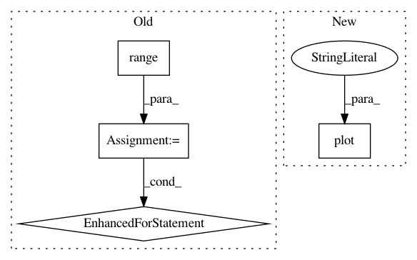

2be6b0d67e07b4c8bb1b87f90d1bda023faa41bf,test.py,,,#,8
Before Change
// DEBUG
// Let"s compute the light curves for each of the Greens basis terms
for l in range(lmax):
for m in range(-l, l + 1):
F = np.array([slm(l, m, b[i], r) for i, _ in enumerate(b)])
pl.plot(b, F - np.nanmean(F))
pl.show()
quit()
After Change
// Plot
pl.plot(b, F)
pl.plot(bbrute, FBrute, ".")
pl.show()
In pattern: SUPERPATTERN
Frequency: 3
Non-data size: 4
Instances
Project Name: rodluger/starry
Commit Name: 2be6b0d67e07b4c8bb1b87f90d1bda023faa41bf
Time: 2018-02-08
Author: rodluger@gmail.com
File Name: test.py
Class Name:
Method Name:
Project Name: kymatio/kymatio
Commit Name: 4f1e7f2f936bf5f3e6d1da8d8be843dc3273fe67
Time: 2018-11-21
Author: janden@flatironinstitute.org
File Name: examples/1d/plot_filters.py
Class Name:
Method Name:
Project Name: pymc-devs/pymc3
Commit Name: 4858a3da74bc14eeaf724c9896bfe77df9451548
Time: 2007-09-13
Author: anand.prabhakar.patil@15d7aa0b-6f1a-0410-991a-d59f85d14984
File Name: PyMC2/tests/test_norm_approx.py
Class Name: test_norm_approx
Method Name: check_draws